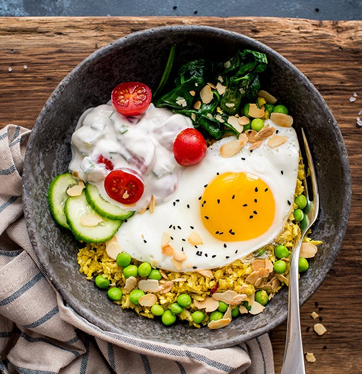

Chickenpeas With Poached Eggs
This is an easy, healthy, high protein,
low fat/calorie and super tasty meal
which is great for vegetarian dinners and
also for when the fresh veg is running low in the fridge.
You can use frozen spinach for this recipe, just defrost
it and squeeze out as much liquid as possible so the dish
isn't too watery.
Calories
266 kcal
Protein
11 g
Sodium
598 mg
Cholesterol
17 mg
Total: $195